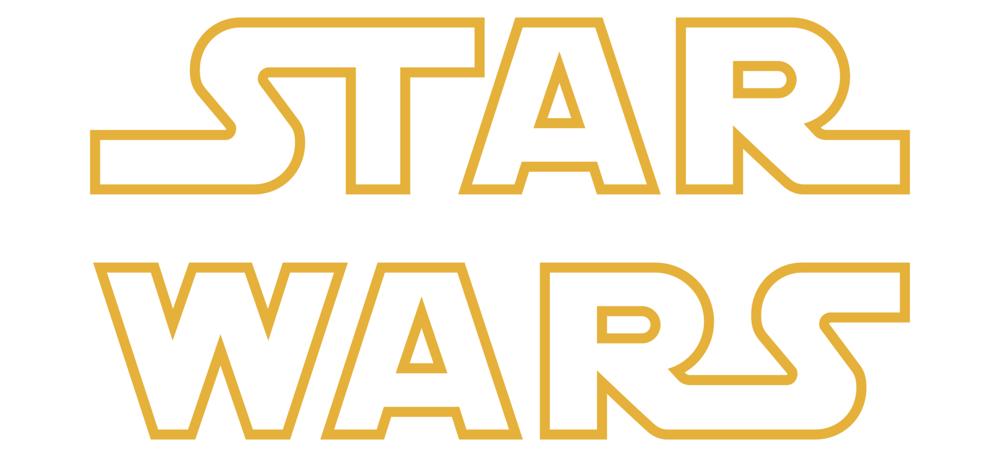
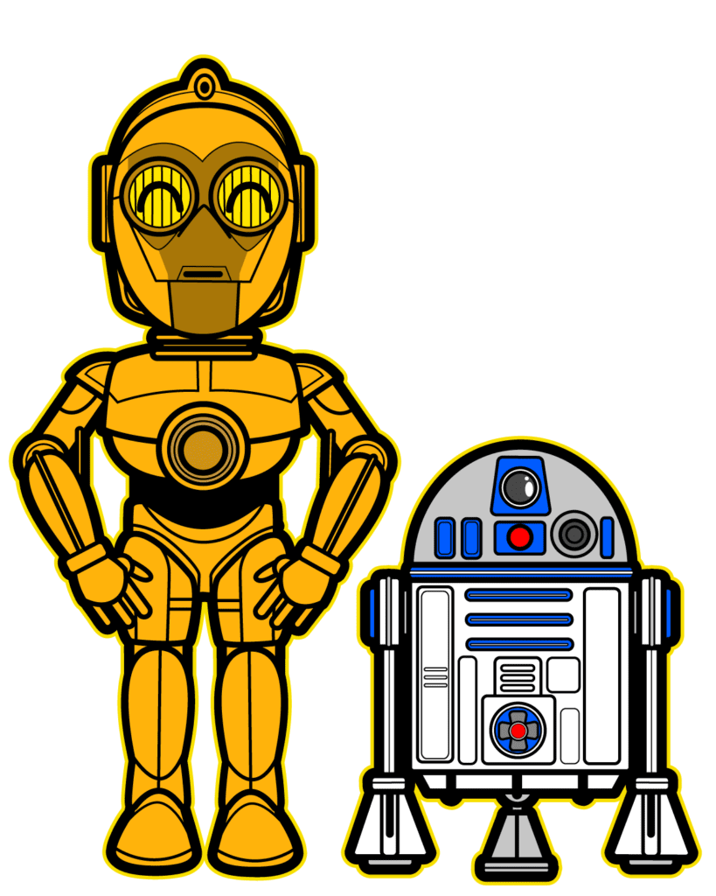

|  | ||
|---|---|---|
O universoStar Wars (Guerra nas Estrelas) é o título de uma "ópera espacial", nas próprias palavras do seu autor que assim designou o universo de fantasia que compunha este projeto, que foi transformada em uma série de nove filmes de ficção científica. Como subprodutos surgiram também uma franquia literária, uma série de jogos eletrônicos e desenhos animados (incluindo a Nova Trilogia, sequências e adaptações literárias) baseados nas idéias do diretor e roteirista George Lucas. Os filmes, organizados em duas trilogias, abordam a transição histórica "numa galáxia muito, muito distante..." onde ocorre a queda da República Galáctica e a implantação do Império Galáctico sob comando do senador Palpatine (Lorde Sith). |
 | |
|
© Disney | Star Wars |
||